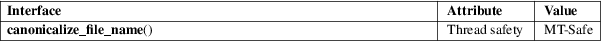

canonicalize_file_name − return the canonicalized absolute pathname
Standard C library (libc, −lc)
#define
_GNU_SOURCE /* See feature_test_macros(7) */
#include <stdlib.h>
char *canonicalize_file_name(const char *path);
The canonicalize_file_name() function returns a null-terminated string containing the canonicalized absolute pathname corresponding to path. In the returned string, symbolic links are resolved, as are . and .. pathname components. Consecutive slash (/) characters are replaced by a single slash.
The returned string is dynamically allocated by canonicalize_file_name() and the caller should deallocate it with free(3) when it is no longer required.
The call canonicalize_file_name(path) is equivalent to the call:
realpath(path, NULL);
On success, canonicalize_file_name() returns a null-terminated string. On error (e.g., a pathname component is unreadable or does not exist), canonicalize_file_name() returns NULL and sets errno to indicate the error.
See realpath(3).
For an explanation of the terms used in this section, see attributes(7).

GNU.
readlink(2), realpath(3)